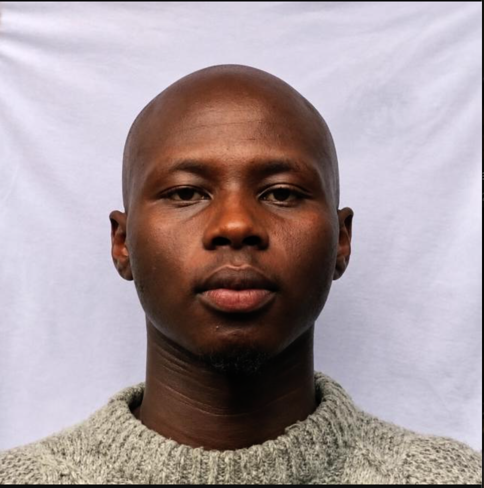
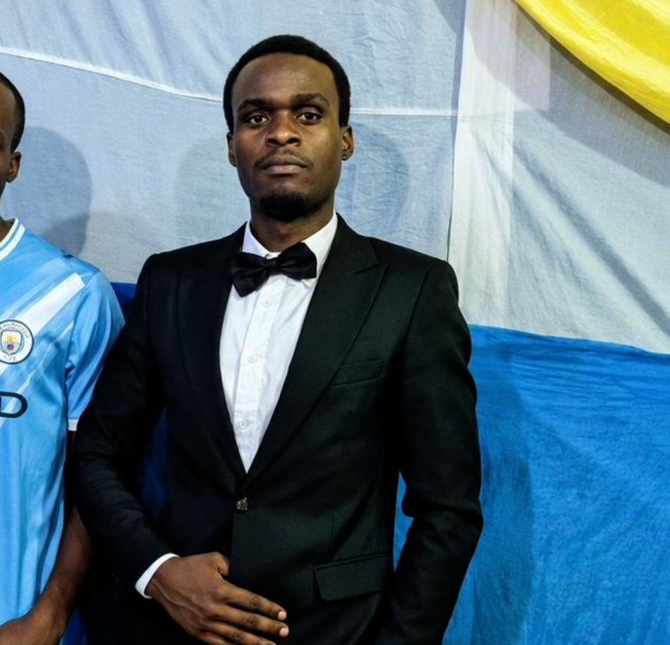

Curated profiles
A clear introduction to the people, practice, and work behind each portfolio.
A considered directory of people building thoughtful things across design, technology, and creative fields.


Meet the makers shaping what’s next.Find your next collaborator, discover a new perspective, or simply explore the work taking shape around you.
Try another name or discipline.
ⓘ Profiles you add are saved in this browser only. They are not shared with other visitors.
Meet Meek, a software engineer and network administrator focused on reliable digital systems, useful software, and infrastructure that works.
Good work is easier to find when the people behind it have a place to be seen.
A clear introduction to the people, practice, and work behind each portfolio.
Explore ideas across technology, design, engineering, and creative practice.
Search and filter to find the experience or perspective you’re looking for.
Go straight to a person’s own portfolio and learn more about their work.
Every portfolio has a person and a point of view behind it.
Thoughtful work comes from curiosity, patience, and a willingness to keep learning.
Creative practice is about making ideas visible and experiences more meaningful.
Good design creates clarity, connects people, and makes the everyday feel considered.
Something else on your mind? Learn about the directory
iMarked is a small portfolio directory for discovering people and their work across creative and technical disciplines.
Use the Add profile button and fill in the short form. Your profile appears in this browser after saving.
Profiles you add are stored in localStorage on your current browser and device. Clearing browser data removes them.
No. This is a frontend prototype with no server. Locally added profiles are visible only in this browser.
Yes. Provide a valid http or https address to your portfolio. External links open in a new tab.
No. The site runs as static HTML, CSS, and JavaScript, with no backend or external service.
Create a profile and make it easier for people to discover what you do.
A few details help people discover your work. Saved locally in this browser.